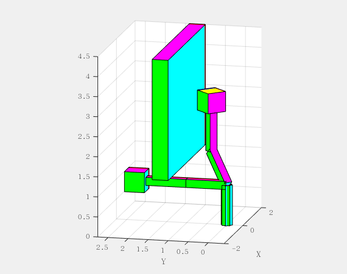
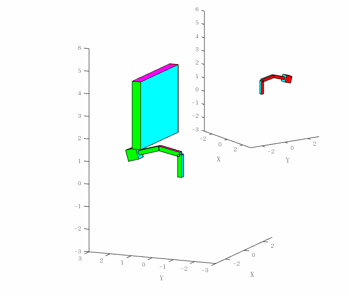

目的
- 通读论文并实现论文的例子

- 搭建一个基本的框架(包含问题描述,障碍物避障准则(代数层面),离散,B-spline,SQP等部分),将其仿真实现,并可应用于n-dof的机械臂.
仿真如下:
论文$t_f$最优时间为0.4261s, Matlab返回(局部?)最优解为0.4412

这篇文章对于最优控制的框架[^1]值得学习,尤其利用代数将避障处理成不等式约束,再利用隐面剔除策略减少约束.本文在前面newton-euler dynamics算法的基础上,结合B样条将问题离散,简单(在未引入隐面剔除策略下,调用fmincon函数)实现论文的optimal time数值算例.
问题描述:
- 动力学方程
可参考上一篇博文,这部分算法已经在Vrep中验证过了.简单验证一下是否和论文的一样 p462
1 | % grav = inversedyn(robot.thetalist, zeros(3, 1), zeros(3, 1) ,robot.g, robot.T, robot.InertiaMtr, robot.Twist) |
核对无误 但是输入文章fig9的u1,u2,u3输入进去,杆1不怎么移动,这里应该是论文fig9有问题,我们将其乘以scaling factor 100. aha,作者回复我了,说忘记在论文提fig9是经过normalized,实际边界在-100~100Nm.此外,作者建议不要考虑重力(insufficient control 将导致robot崩溃 - -),关于初值的选取作者建议除了论文中的scaling方法,还可以从无障碍物开始训练,以constructing good initial guess.本博文也将采用这一策略.
- 避障准则
- B-spline 直接离散化
- SQP
- 隐面剔除策略
序列二次规划(SQP)
因为时间有限,本此仿真将利用Matlab优化函数处理离散最优问题.先对fmincon有个大概了解.后续腾出手来再补充SQP.
作为Nonlinear programming solver,求解如下形式:
$$ min_x f(x) ~ s.t : c(x)\leq 0, ceq(x) = 0, A\cdot x \leq b, Aeq\cdot x = beq, and, lb \leq x \leq ub $$
开发进度
spline_curve(torque_grid_point, t, order, knot_vector),样条离散,输入 $t \in [0,1]$ 计算torque. 关于初值的选取我问了论文作者,他说如果没记错的话,对于torque control取了21个控制点(de boor point), 一阶样条,与auxiliary control $\omega$一致.
边界约束
$$u(t)\in U: = {u\in \mathbb{R}^m | u_{min} \leq u \leq u_{max} }$$
$$ \omega_{i,k} \geq 0, for~ i = 1,…,12, k = 1,…,21 $$
(为和论文保持统一,只考虑load和obstacle,每个cuboid六个面, 共12次, 时间节点划分为21个.)
- 关于线性等式约束和线性不等式约束.
无.
- 关于非线性等式约束和非线性不等式约束.
粗略一看,边界约束属于线性等式约束,在这个离散最优问题上,我们对动力学方程离散有两种方式: 1.由各时间节点 joint angle进行样条离散,2.是按论文的,对control进行离散.
从动力学方程的角度,似乎不太好按第一种方式进行离散,因为时间最优控制一般是bang-bang控制,关节轨迹一般需要比较高阶的样条(但在initial_guess时会更直观一点吧?).不过结果应该差不多吧,按这种方式离散, 上述边界约束则是非线性约束.
我还是按论文走.对control离散之后,调用正动力学计算$\ddot{\theta}$,选择合适的积分策略(这里简单选择euler显示格式,因为步长划分比较多).再调用正运动学计算负载位姿$T_{load} = [R,p;0 0 0 1] $,得到离散后避障约束方程(P444,OCP Problem)以及关节边界约束:
$$ G_I(x_k(z))^T w_I,h(t_k) = 0, I = 1,…,M=12,~~ K = 0,…,N $$
$$ g_I(x_k(z))^T w_I,h(t_k) <= -e $$
$$ \phi(x_o,x_N(z)) = 0; $$
在程序中我设置了两个模式,以便切换.
robot.collision_mode = 0; %false = 0 默认不考虑, 进行最省时间路径规划
Q1.错误使用 barrier
Nonlinear constraint function is undefined at initial point. Fmincon cannot continue.
遇到这个问题需要检查一下,调用nonlinear_constraint(initial_guess) 看是不是有NaN.(问题主要出在计算正动力学时 $ M $ 矩阵奇异.这与我们初值选取有关,如果想要避免这一问题,初始值可以稍微小一点.)
Q2.Local minimum found that satisfies the constraints. 弄了个乌龙,返回满足局部最优,于是将其绘制轨迹曲线,发现都为0, 才发现最优化问题改变了x(1:6,1)这几个值,边界条件得管好呀..
有了这么个解之后,可以做很多事情了.
关于为什么将$[0,tf]$转化到$[0,1]$
如果我没理解错的话,除了为了分析Hessian之外,在编程中我发现,如果tf过大,划分步长不够的话,forwardynamics函数容易积累误差.想必这也是论文作者敢划分21点的原因,平均下来步长也就0.05,perfect!
- 局部最优与全局
探讨一下全局的策略.待完善. 涉及SQP一些技术手段,待后面再讨论. 本文仅在运行程序时做一些小记录.
在训练initial guess的时候, 训练到了iter = 10,从下午六点到晚上八点半才训练出一个较好的初值.这次优化包括了6+ 3*21 + 12*21 + 1个变量,其实应该像论文中所采取的做法,将Hessian输入到sqp求解中,能有效提高计算效率.经过我的测试,一个good initial guess可以将计算缩短,我在目标函数中加入了惩罚项 $\alpha||norm(\omega_i)||$,可以稍微提高鲁棒性.
对大于20维优化问题,不建议用Matlab fmincon,本笔记只做一个简单的测试.具体实践中,还应该吃透一些常用的优化算法,编写好优化问题的梯度与Hessian.
- exitflag
-2: No feasible point
-1: The output function terminated the algorithm
0: Iterations exceeded options.
1: 某种情况达到了收敛. 具体见doc fmincon.
- 数值结果
与论文控制力有些差别,计算差异体现在积分策略,以及 $\omega$ 的边界条件上.
注: 经测试,选择相同fmincon的优化算法,matlab 2019b与2015b均可以跑到相同结果.

- 关于梯度与Hessian阵.
这是一个可以对论文改进的方向.博文到这里, 耗费一周时间总算完成了一个OCP问题小实验.
程序优化
- 因为论文采用的是一阶样条, 为了精简计算, 可以使用表达式避免调用
$$ u = u_i + \frac{(t- t_i)}{t_{i+1}-t_i}(u_{i+1}-u_i) , t \in [t_i-t_{i+1}] $$
- 编写程序贪快,可以将一些参数变量放到
main函数. - 隐面剔除
- Hessian矩阵
- Parallel Computing Toolbox - MATLAB 并行计算
参考文献
[^1]: path planning and collision avoidance for robots.
补充
/release1.1_with_obstacles/ ReswithObs.mat 为 tf = 0.4412, exitflag = 2;
1 | %% ---引用 |
./mainprogram_spline_dev.m 为 tf = 0.4248, exitflag = 1;
fmincon在高维上做的并不是非常出色,用同伦的方法找初值是一个办法,这也是一个不断试错的过程.
但是如果可能,还应该对程序优化,如梯度与Hessian,剔除策略.